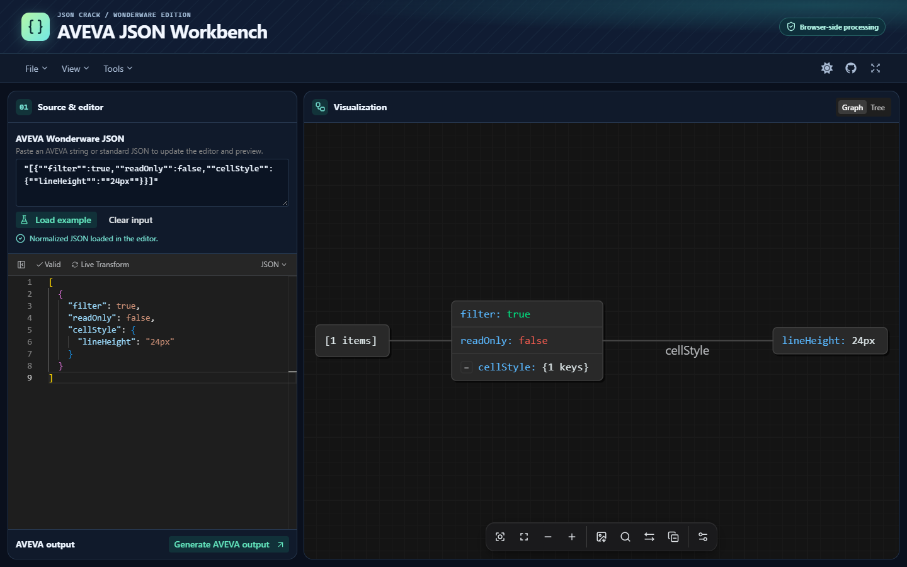
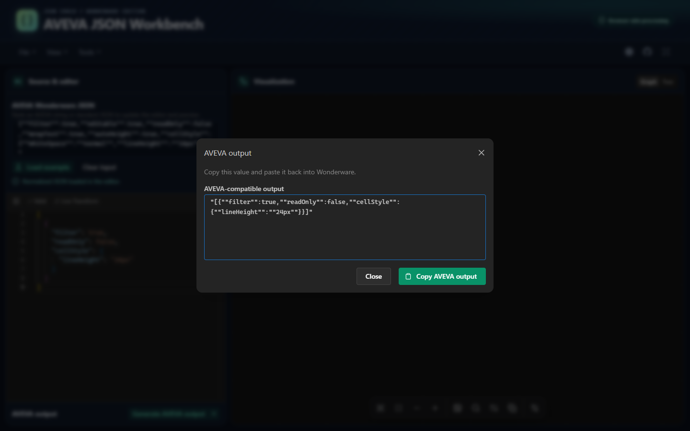
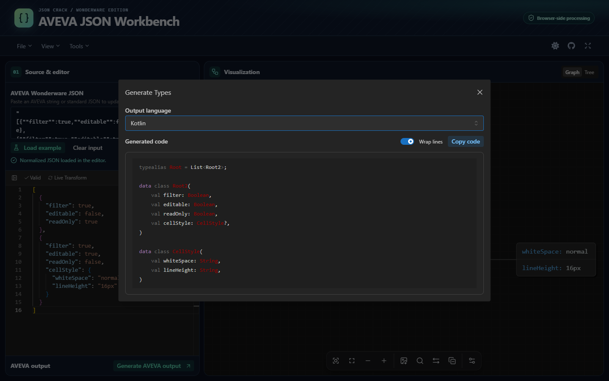

Local executable
Use the packaged Workbench on this Windows PC. The browser opens at 127.0.0.1:8787.
INSTALLATION & USER GUIDE
Paste a Wonderware value, explore it as a graph or tree, then copy the edited JSON back in the same quoted format.

See screenshots ↓01 / Setup
Use the packaged Workbench on this Windows PC. The browser opens at 127.0.0.1:8787.
Start the executable with --lan to keep local access and serve the selected LAN interface on the same port.
Use the PowerShell 7 launcher to start both processes and set up the scoped Windows firewall rule.
The archive contains the Windows x64 executable. Keep the matching SHA3-256 file for verification. If you opened this guide from an extracted archive, use the online guide to download a fresh copy.
.7z archive with 7-Zip. It contains the executable, the public signing certificate, this guide, and the LAN launcher.AVEVA-JSON-Workbench-win-x64.exe on Windows x64. Keep its console open.The executable includes Node.js and the editor assets. Use Ctrl+C in its console to stop the local server.
.\AVEVA-JSON-Workbench-win-x64.exe --port 8788Use --no-open to start the server without opening a browser. This option works with either local or direct LAN mode. Use --help to list the executable’s options.
On the Windows host, close any Workbench instance already using port 8787. Open PowerShell in the extracted release folder and start the executable in LAN mode.
.\AVEVA-JSON-Workbench-win-x64.exe --lanOpen the printed LAN URL on a device on the same subnet. With multiple interfaces, the executable lists the available addresses. Use ipconfig to identify your Ethernet or Wi-Fi IPv4 address, then pass it as --lan-address.
.\AVEVA-JSON-Workbench-win-x64.exe --lan-address 192.168.1.50 --port 8788 --no-openReplace 192.168.1.50 with the host’s address. Use the printed port when opening the URL from another device. If Windows prompts for access, choose your trusted network profile. On a managed network, ask the administrator to allow inbound TCP on the selected port.
To let the launcher handle the firewall setup, run it from PowerShell 7 in the extracted release or repository folder.
pwsh -NoProfile -File .\scripts\Start-WorkbenchLan.ps1The launcher requires internet access to download and verify the latest official Caddy release. It starts the Workbench on loopback and Caddy on the chosen LAN IPv4 address, then prints both URLs. If Windows prompts for administrator approval, approve the firewall rule for the Private or Domain network profile. The rule remains available for later runs.
Use -LanAddress to pick the interface, -Port to change the port, or -WorkbenchPath to point to an extracted executable. On a managed network, use -SkipFirewall after an administrator has allowed the port.
Keep the launcher open. Ctrl+C stops both processes. LAN access uses HTTP without authentication. Use it on a trusted network.
Download the LAN launcherUse Node.js 24 or later and pnpm 10.20.0. Open a terminal in the workbench folder.
pnpm install --frozen-lockfile
pnpm dev:wwwOpen http://localhost:3000/. Keep the terminal open. The first visit may take longer while Next.js compiles.
This development mode is for working on the source. For distributing the packaged Windows app on a LAN, use the executable or Caddy steps in the Windows tab.
To rebuild the signed Windows package, use the official Windows Node.js 24.8 or later distribution, install Windows SDK Signing Tools and 7-Zip, then run pnpm release:sea.
02 / Daily use
To generate code from the current editor contents, open Tools → Generate Type, choose an output language, and select Copy code. Use Wrap lines to fit long lines in the preview. If the clipboard is unavailable, the dialog selects the code so you can copy it manually.
Import
Paste into AVEVA Wonderware JSON or select Load example. The workbench decodes the outer quotes and doubled internal quotes. Invalid input leaves the previous document available.
Explore
In Graph view, hover over a node to preview its JSON in the left editor. Click a node to select that text, or use Node details to inspect it. On a narrow screen, switch to Source & editor to see the selection.
Return
Choose Generate AVEVA output. The dialog focuses the read-only result. Select Copy AVEVA output, then paste it into Wonderware. Escape returns focus to the launch button.
Use File → Export for the current document. Use the graph toolbar for image export and Tools for jq, JSONPath, schema, and type generation.
03 / Visual tour
See the editor, the Wonderware output, and generated types.


04 / Try it
Compare the incoming value with its normalized document. Change readOnly to see how the result returned to AVEVA changes.
"[{""filter"":true,""readOnly"":true,""cellStyle"":{""lineHeight"":""16px""}}]"05 / Recovery
The release uses a self-signed Authenticode certificate. A default Windows installation does not trust that publisher. Inspect the EXE signature and compare the certificate thumbprint against a value supplied through a trusted channel before making a trust decision.
Get-AuthenticodeSignature -LiteralPath .\AVEVA-JSON-Workbench-win-x64.exe |
Select-Object Status, StatusMessage, SignerCertificateThe archive includes the public .cer certificate.
Check the console for its URL. If port 8787 is in use, run the alternate-port command above and open http://127.0.0.1:8788/. If Windows reports a different error, inspect that error before retrying.
Use the LAN URL shown by the launcher and confirm both devices are on the same subnet. If the host has multiple network adapters, pass -LanAddress with the host’s LAN IPv4 address. On a managed network, ask the administrator to allow the port and run with -SkipFirewall to use the existing firewall policy.
Use the JSON format in the editor and correct syntax errors. Output generation accepts a JSON object or array. After editing, generate again to get the current value.
Switch to Tree to continue inspecting the data, or reduce the document size. You can still edit and export the document.
Run the command below from the download folder if Node.js is installed. Compare its output with the first field in the .sha3-256 file. If the values differ, download both files again from the same release.
node -e "const h=require('node:crypto').createHash('sha3-256'); require('node:fs').createReadStream(process.argv[1]).pipe(h).setEncoding('hex').pipe(process.stdout)" .\AVEVA-JSON-Workbench-win-x64.7zSelect the text in the output box and use your device’s copy command. On Windows, use Ctrl+A then Ctrl+C while the output box has focus.